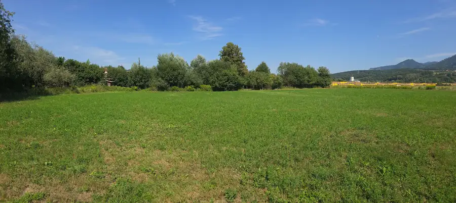
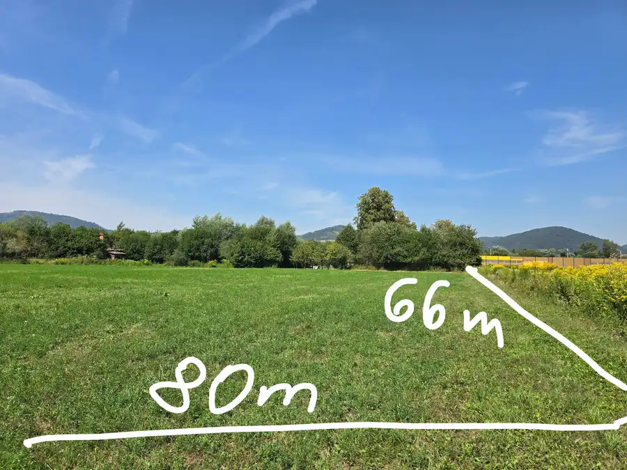
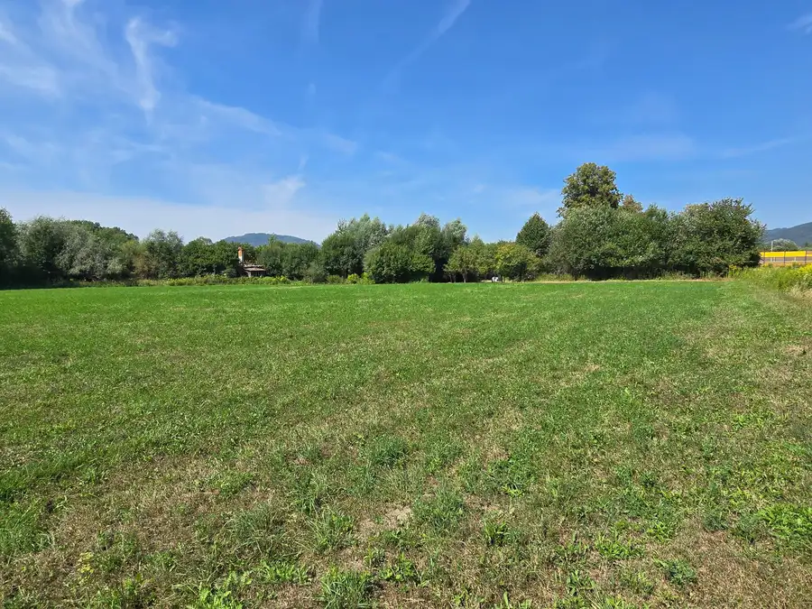
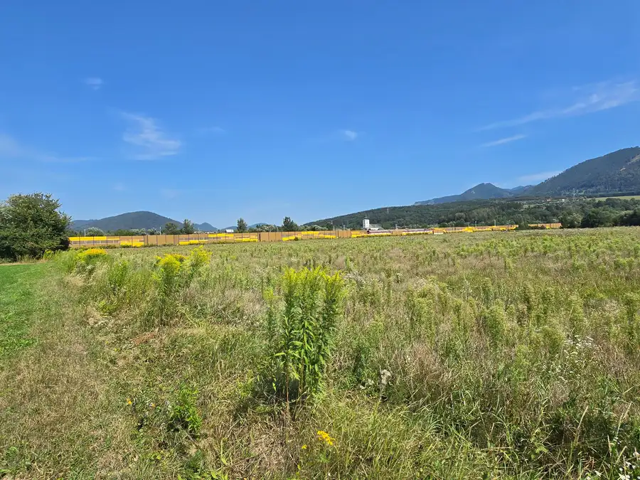
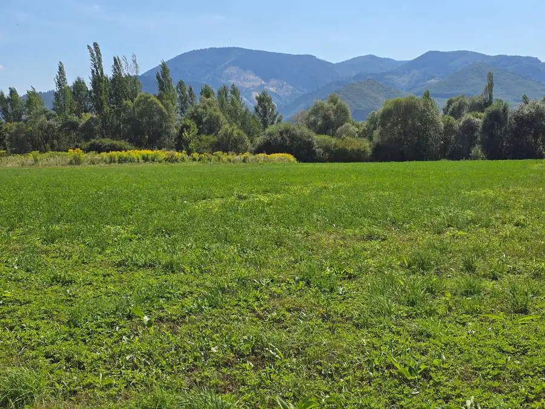
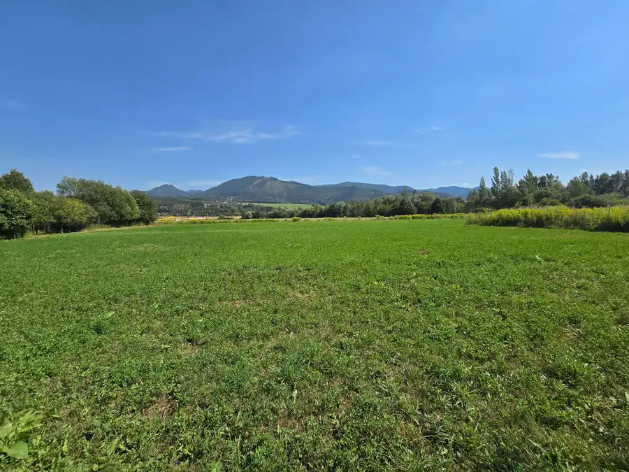
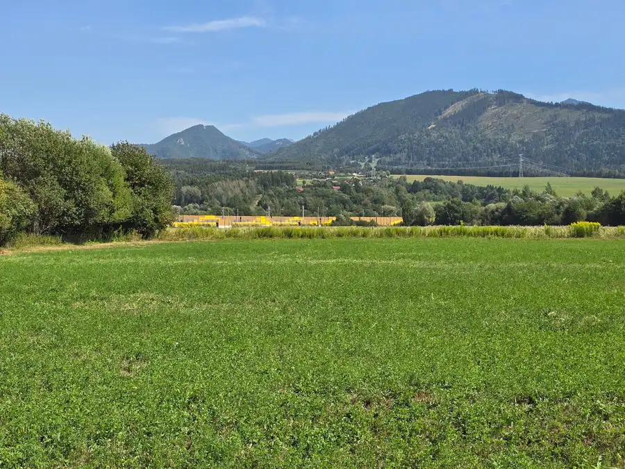
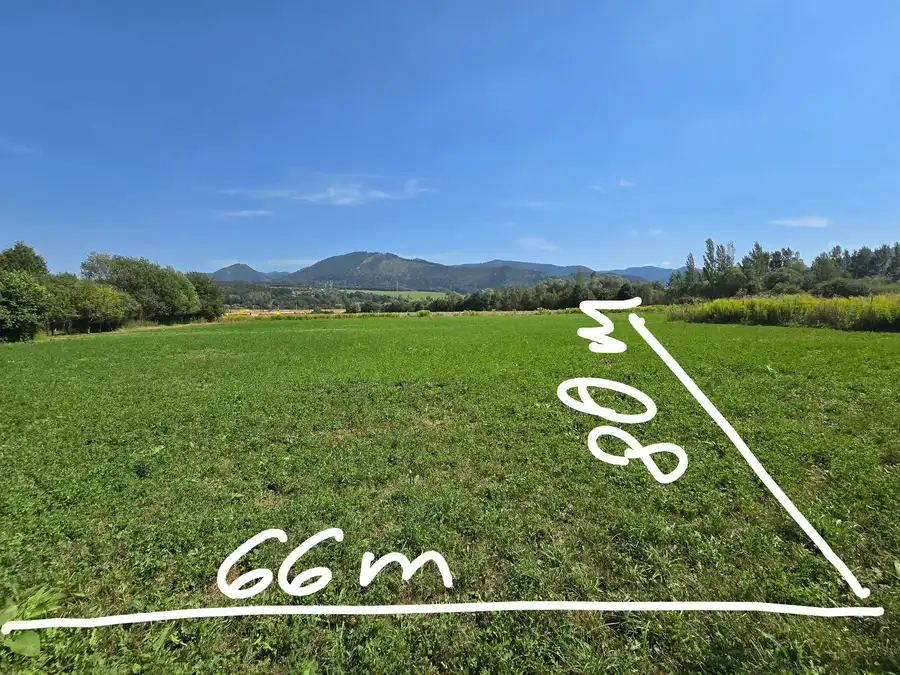

Predaj: Investičný pozemok s veľkým potenciálom – k.ú. Varín (5 403 m²)
Varín









- Plocha5403 m²
O nehnuteľnosti
Ponúkame na predaj rozsiahly pozemok v katastrálnom území Varín (okres Žilina), situovaný mimo zastavaného územia obce (extravilán). Vzhľadom na svoju výmeru a strategickú polohu v blízkosti existujúcej zástavby ide o zaujímavú investičnú príležitosť.Základné parametre pozemku:Katastrálne územie: VarínParcelné číslo: 1792/3 (registra C)Celková výmera: 5 403 m²Druh pozemku: Orná pôda (mimo zastavaného územia)Rozmery: Šírka cca 66 m, dĺžka cca 80 mPrístup: Príjazdová cesta je tohto času v riešeníLokalita a charakteristika:Strategické umiestnenie: Pozemok sa nachádza pri zmodernizovanej železničnej trati, v tesnej blízkosti dvoch bytových domov a bývalého areálu Drevoindustrie.Výborné rozmery: Pravidelný tvar a veľkorysá šírka (66 m) umožňujú variabilné budúce využitie.Investičný potenciál: Blízkosť obytnej zástavby a priemyselného/výrobného územia dáva pozemku do budúcna zaujímavé možnosti využitia.Cena za m²: 30€ / m² Celková cena: 162 090 €V prípade záujmu o bližšie informácie alebo obhliadku nás neváhajte kontaktovať na +421 905 206 838 alebo e-mailom na robert.maliar@gmail.com
Parametre
- Druh
- Orná pôda
- Dátum zverejnenia
- 16. 08. 2026
- Dĺžka pozemku
- 80
- Elektrina
- Nedostupné
- Odpadové vody
- Nedostupné
- Plocha pozemku
- 5403 m²
- Plyn
- Nedostupné
- Terén pozemku
- Rovinatý
- Typ
- Predaj
- Voda
- Nedostupné
- Šírka pozemku
- 66